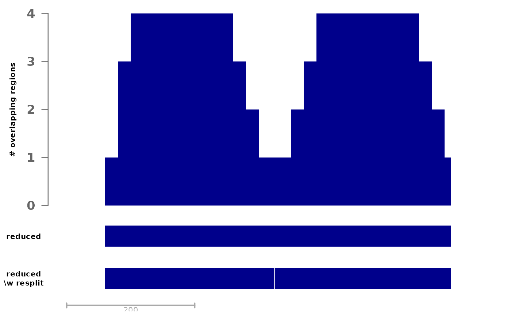

Merge regions, re-splitting large merges using local overlap minima
reduceWithResplit.RdThis is an alternative to something like
reduce(unlist(GRangesList(peaks))) for merging overlapping regions"
it tries to break up large merged regions based on the profile of overlap
with the un-merged regions. We typically use this to merge for instance peaks
called on different samples.
Usage
reduceWithResplit(
peaks,
softMaxSize = 500L,
relTroughDepth = 1/3,
minTroughDepth = 2L,
minTroughWidth = 1L,
minDistFromBoundary = 150L,
minPeakSize = 100L,
BPPARAM = BiocParallel::SerialParam()
)Arguments
- peaks
A list of
GRanges-class, or aGRanges-classcontaining overlapping regions.- softMaxSize
The (merged) peak size below which re-splitting will be attempted
- relTroughDepth
The minimum depth of local minima, as a fraction of the maximum. E.g. with a maxima of 12 peaks, the default of 1/4 would require the minima to be below or equal to 9.
- minTroughDepth
The absolute minimum depth of local minima, in number of peaks below the maxima.
- minTroughWidth
The minimum width of the local minima.
- minDistFromBoundary
The minimum distance of the local minima from the peak border.
- minPeakSize
The minimum final peak size.
- BPPARAM
BiocParallel Param object for multithreading. If set, chromosomes are split into threads.
Details
This is an alternative to something like
reduce(unlist(GRangesList(peaks))), which stitches overlapping regions
together and can result in large regions that can be problematic for some
applications. The function tries to break those large regions into composing
by using the coverage by the original (un-merged) regions. See the example
below for an illustration.
The procedure first reduces `peaks`, then identifies reduced regions whose
width is above a certain threshold (`softMaxSize`). For those regions, a
coverage by the original peaks is computed to identify local minima
('troughs') in the coverage that could divide the region into sub-regions of
desirable lengths. `relThroughDepth` determines the minimum depth of the
trough (i.e. decrease) as a fraction of the maximum coverage in the region,
while `minTroughDepth` determines the absolute minimum depth.
Note that the algorithm iterates through regions one by one and as such is
quite slow, hence multithreading is recommended for large sets of regions.
Examples
# consider the following example set of regions:
gr <- GRanges("1", IRanges(c(100,120,140,390,410,430,120),
width=rep(c(200,520),c(6,1))))
plotSignalTracks(list(regions=gr, "# overlapping regions"=coverage(gr),
reduced=reduce(gr)), region=reduce(gr))
# if we are interested in having smaller regions, clearly it would seem
# sensible here to cut roughly in the middle, since we have two distinct
# groups of regions that are only joined by a single region
(redGr <- reduceWithResplit(gr, softMaxSize=100))
#> GRanges object with 2 ranges and 0 metadata columns:
#> seqnames ranges strand
#> <Rle> <IRanges> <Rle>
#> [1] 1 100-363 *
#> [2] 1 365-639 *
#> -------
#> seqinfo: 1 sequence from an unspecified genome; no seqlengths
plotSignalTracks(list("# overlapping regions"=coverage(gr),
reduced=reduce(gr), "reduced\n\\w resplit"=redGr),
region=reduce(gr))
